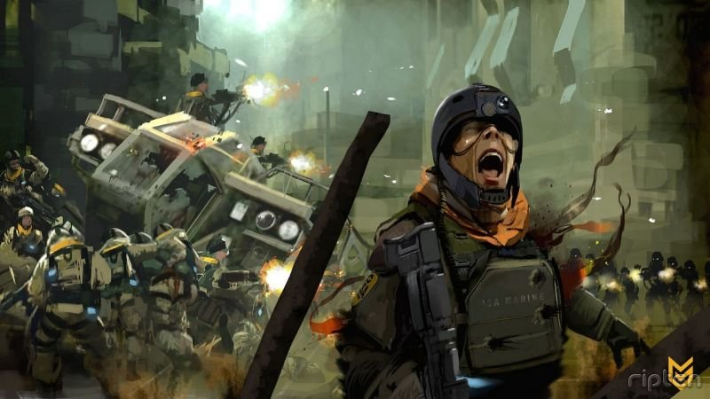

Are video games art: the debate that shouldn't be | Games | The Guardian
2020.11.10 16:44
International edition International edition UK edition US edition Australian edition The Guardian - Back to home Search jobs Sign in Search News Opinion Sport Culture Lifestyle Show More Show More News Coronavirus World news UK news Environment Science Global development Football Tech Business Obituaries Opinion The Guardian view Columnists Cartoons Opinion videos Letters Sport Football Cricket Rugby union Tennis Cycling F1 Golf US sports Culture Books Music TV & radio Art & design Film Games Classical Stage Lifestyle Fashion Food Recipes Love & sex Health & fitness Home & garden Women Men Family Travel Money Make a contribution Subscribe Search jobs Holidays Digital Archive Guardian Puzzles app The Guardian app Video Podcasts Pictures Newsletters Today's paper Inside the Guardian The Observer Guardian Weekly Crosswords Search jobs Holidays Digital Archive Guardian Puzzles app Coronavirus World UK Environment Science Global development Football Tech Business Obituaries Games blog Games
Are video games art: the debate that shouldn't be
Last week Guardian art critic Jonathan Jones suggested that games cannot qualify as art. But is he right and does it matter? Who is to say that a Super Mario jump is or isn't art? Who is to say that a Super Mario jump is or isn't art? Keith Stuart @ keefstuart Thu 6 Dec 2012 16.00 GMTIn August 1878, when the editors of the popular American magazine Appleton's Journal first encountered Impressionism, their response was one of bafflement and affront. "What new dogma is this," demanded one editorial, "that so long as colour is heaped on in a vigorous manner, a picture must be accepted as complete, however crude and raw it may seem, however absolute is the evidence that the artist stopped before he had done?"
To them, and to the French critics who attended the first showing of paintings by Monet, Degas and Pissaro on the Boulevard des Capucines in 1874, these works were a travesty; an insult to the formal skill of the great masters. They were not art, they were incomplete.
We can then fast forward, if we must, to Duchamp's great practical joke, Fountain, to Warhol, to the Young British Artists, all pilloried, all questioned, all placed against battered and subjective dogma. Now we can add video games.
Somehow, this issue is still being analysed and debated – mostly by those outside of the industry, who have little clue about games. In 2010 the film critic Roger Ebert made himself a few thousand internet enemies by declaring that games can never be art . And last week, the Guardian art critic Jonathan Jones reacted with disdain to Moma's exhibition of 14 classic video games . In a piece entitled "Sorry Moma but games are not art" he claimed that games could never qualify as artistic expression because their very interactivity meant that the creator was unable to claim an authorial vision. "No one 'owns' the game," he suggested, "so there is no artist, and therefore no work of art".
It is a comment that returns us to that first Impressionist exhibition, where the critic Louis Leroy cruelly lampooned the works on display as uncultured blobs of paint on dirty canvases. "The visual arts world is always ready to defend its turf against interlopers," says Matt Adams, co -founder of interactive art collective Blast Theory . "As a games designer and as an artist making interactive work this stuff is a constant.
"Ironically, the arguments that Jones musters are uncannily similar in style to those used against Duchamp's Urinal or Carl Andre's Equivalent VIII. Those critics also asserted that a ready made was not a valid act of personal imagination, that it was 'just' an object that the artist didn't even own".
For Adams, the flaw in Jones' argument is that the insistence on a lone creative voice immediately strikes out all collective practice and every collaboration. "It is facile to assert that it is the solo nature of its production that allows an artwork to speak to others," he says. "So much contemporary visual art is made by teams of technicians and assistants, even before we start on a heritage of amazing collaborators ranging from Gilbert and George to Heather and Ivan Morison. Most games are, in any case, strongly driven by the vision of a single designer. Games connoisseurs would know a Miyamoto from a Wright in a heartbeat".
Jones' piece also overlooks the artists already using video games, both as a primary source of inspiration, and an artistic medium. "Among them is game artist Jason Rohrer, a number of whose works have already been shown in NYC MOMA," says Richard Lemarchand a veteran game designer who now lectures at USC. "Rod Humble made a game called The Marriage in 2007 that took an important step to stake out territory for games as art whose meaning arises solely through the ludic systems of its interactivity, rather than through the nature of its content, and an international community of artists like Anna Anthropy, Daniel Benmergui, Jenova Chen, Dan Pinchbeck and Tale of Tales are all doing interesting work".
Jones is a little behind on all of this. The central question of whether interactivity cedes too much responsibility to the spectator has been tackled by artists and musicians for over 100 years. Lemarchand, for example, refers to Umberto Eco's essay, Opera aperta ("The Open Work"): "it was inspired by composers like Stockhausen, Berio, Pousseur and their use of aleatoric and ludic methods to introduce dynamic elements of possibility into their music. Eco extrapolated from those works to develop a literary theory whereby texts are not static, in part because of their 'intertextuality', but most importantly, because of the interpretive role of the reader". You could also point to the telematic art of Roy Ascott, who set up the radical and influential Groundcourse in art teaching in the sixties and who has explored the concepts of telepresence and cyberspace in art. When I interviewed him for Frieze magazine three years ago, he was fascinated by the artistic possibilities of games.
It is possible to argue, of course, that all art is interactive; it is there in the very act of interpretation. The artist is never the soul arbiter of meaning, and artists, like game designers, build structures through which they communicate rather than dictate. "As someone who has been professionally designing video games for all of their adult life, it's always surprising to me to hear people claim that there isn't, 'the presence of an organising mind' behind them," says Lemarchand. "Games are made up of sets of rules and goals that produce dynamical systems as players begin to use them. Those rules are created by someone - a game designer - and circumscribe a space of possibility and meaning for the player to explore. Sometimes the rules are strict and rigidly constraining, sometimes they're loose and require interpretation - no more or less than a score by Mozart, or a set of conceptual instructions from John Cage, Yoko Ono or Sol Le Witt".
Moma has clearly chosen its initial batch of subjects on principles of design rather than meaning; I hope it will expand its parameters. I hope Jonathan Jones gets to play Journey or The Graveyard or Dear Esther , games that express and explore life, fear and beauty. These are important things. "For a game to qualify as an art work we should ask: can they carry intellectual and emotional sophisitication? Can they move you? Can they express complex ideas?" says Adams. "The answer is yes, yes and yes. It may not be PacMan that does it for me. It isn't Katamari Damacy or Bioshock or any of the other regular candidates. But, as one small example, 911 Survivor is a short mod that puts you into the World Trade Center after the first plane has hit and it's an experience I will never forget. It prompted death threats and was withdrawn. It is as valid a work of art as any piece of ceramics, any ready made, any abstract expressionist painting".
What is art? What isn't? It is a fool's errand, really, and when applied to video games, there can only be one true and valid response: does it really matter? The perfect arc of a Mario jump, the iridescent beauty of Rez, the pastoral longing of Flower, even the architectural brilliance of a Counter-Strike map; none of this is belittled if it fails to 'qualify' as art. "Jonathan's piece is the normal half-baked reactionary response that's been wheeled out several times over the last few years," says Dan Pinchbeck, a lecturer in computer games and creative technologies at Portsmouth University and designer of Dear Esther. "To be honest, I don't think its actually a very interesting question. I don't think games need to aspire to being art, like art is an inherently more worthwhile form of cultural expression - people were playing games long before they were making art, so it's certainly not an older one. A more interesting question is, why is it so important to some people that games are NOT art? Why do they feel so threatened by games being art?"
And this is the soul of it really; this is what it comes down to. Certain critics will always attempt to barricade themselves against the flood of the new, to fence in what they understand and can safely ascribe meaning to – but new art always seeps through. The next time someone tells you that something isn't art, that it can't possibly even qualify, know that what they're really telling you is that they are bewildered by change. That's okay, it's human, but it shouldn't be mistaken for criticism. Are games art or aren't they? Nobody need answer. Games are beautiful and important, we can leave it there and know that we are right.
Topics Games Games blog Art Game culture blogposts Reuse this contentcomments ( 0 )
Sign in or create your Guardian account to join the discussion.comments ( 0 )
Sign in or create your Guardian account to join the discussion. Coronavirus World UK Environment Science Global development Football Tech Business Obituaries News Opinion Sport Culture Lifestyle Contact us Complaints & corrections SecureDrop Work for us Privacy policy Cookie policy Terms & conditions Help All topics All writers Digital newspaper archive Facebook Twitter Newsletters Advertise with us Search UK jobs Back to top © 2020 Guardian News & Media Limited or its affiliated companies. All rights reserved. (modern)